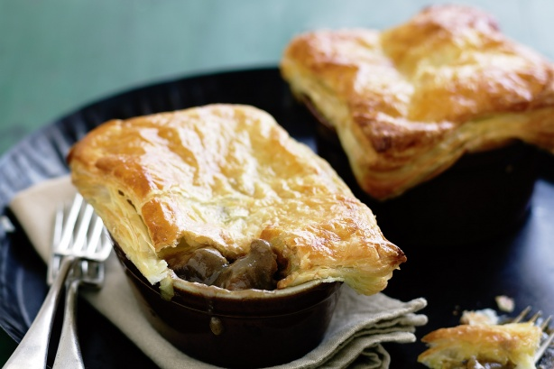
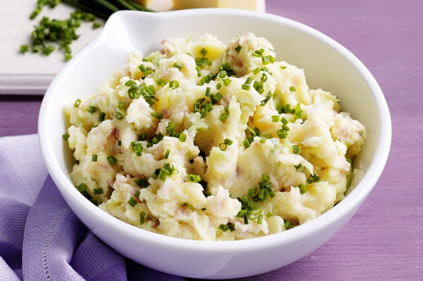
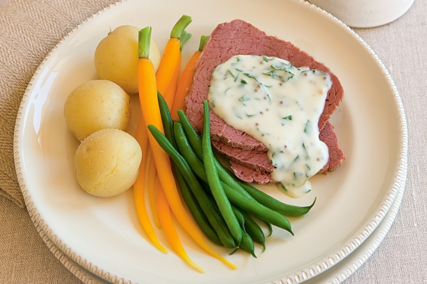

Nando's Restaurant
Home
Menus
Restaurants
Feedback
Recipes
Recipes
Beef and Guinness pies

Champ mash
Sausages and champ
Beef, stout and potato pies
Colcannon

Corned beef with mustard parsley sauce
